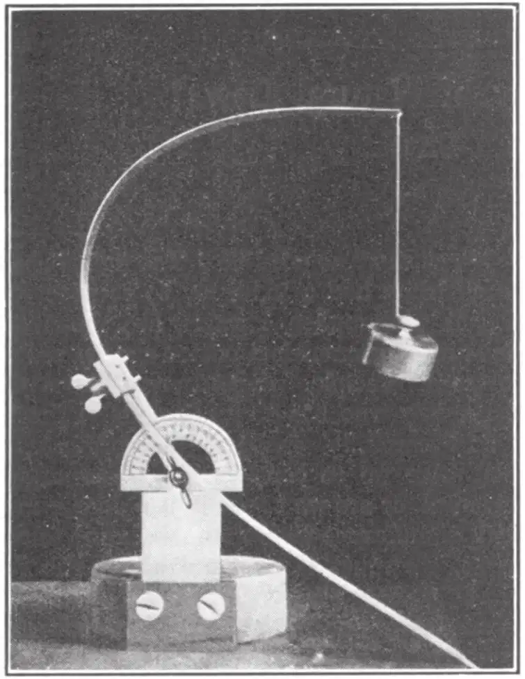
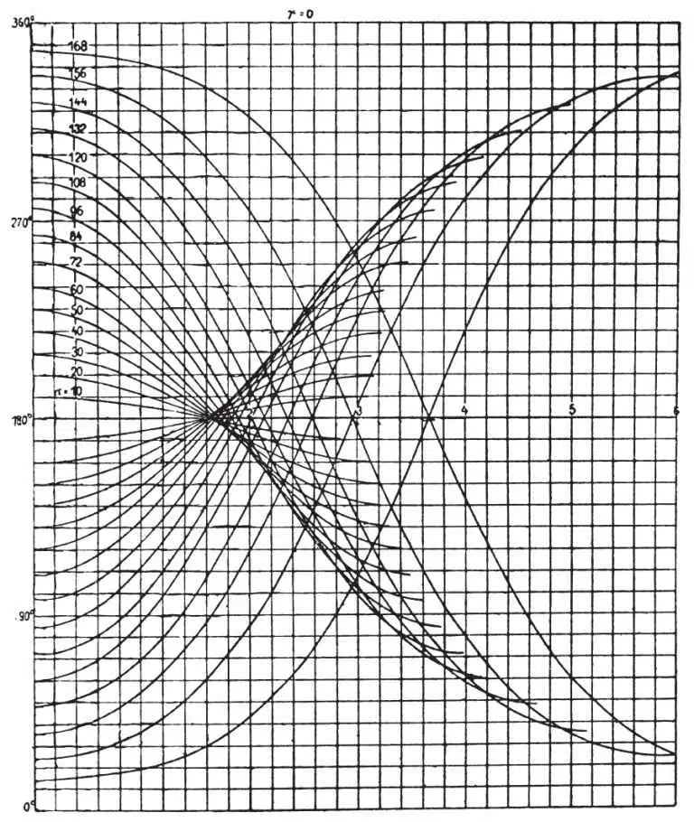

中文
中文M. Born
Editor’s Note
In the 1920s, Max Born, based at the University of Göttingen, had been one of the founders of quantum mechanics. The German government’s decision that Jewish people could no longer teach at German universities made it necessary for him to leave Germany; after a brief stay at Cambridge he settled in Edinburgh where he and his family remained for several decades. Born was an exceptionally lucid lecturer. This general lecture on the laws of physics is a model of its kind. 中文
WITHOUT claiming to be a classical scholar, I think that the earliest reference in literature to the problems which I wish to treat here is contained in Virgil’s “Aeneid”, Book I, line 369, in the words “taurino quantum possent circumdare tergo.” 中文
When Dido landed at the site of the citadel of Carthage, she opened negotiations with the inhabitants for some land and was offered for her money only as much as she could surround with a bull’s hide. But the astute woman cut the bull’s hide into narrow strips, joined them end-to-end and with this long string encompassed a considerable piece of land, the nucleus of her kingdom. To do this she had evidently to solve a mathematical question—the celebrated “problem of Dido”: to find a closed curve of given circumference having maximum area. We do not know how she solved it, by trial, by reasoning, or by intuition. In any event, the correct answer is not difficult to guess: it is the circle. But the mathematical proof of this fact has only been attained by modern mathematical methods. 中文
In saying that the first appearance of this kind of problem in literature is that quoted above I am not, of course, suggesting that problems of minima and maxima had never occurred before in the life of mankind. In fact, nearly every application of reason to a definite practical purpose is more or less an attempt to solve such a problem: to get the greatest effect from a given effort, or, putting it the other way round, to get a desired effect with the smallest effort. We see from this double formulation of the same problem that there is no essential distinction between maximum and minimum; we can speak shortly of an “extremum”, and “extremal” problems. 中文
It was during Isaac Newton’s lifetime, at the end of the seventeenth century, that geometrical and mechanical problems of extremals began to interest mathematicians, and shortly after Newton’s death (1727) the metaphysical idea of purpose or economy in Nature was linked up with them. 中文
One of the simplest examples is the optical “law of reflection” which can be expressed as a minimum principle: the beam of light from a point P1 to another point P2 selects just that reflecting point Q which makes the total path P1Q+QP2 as short as possible. The light behaves as if each beam had a tendency to contract, and the French philosopher, Fermat, has shown that all the laws of geometrical optics can be reduced to the same principle. Light moves like a tired messenger boy who has to reach definite destinations and carefully chooses the shortest way possible. Are we to consider this interpretation as accidental, or are we to see in it a deeper metaphysical significance? Before we can form a judgment, we must learn more about the facts and consider other cases. 中文
The straight line is the shortest connexion between two points in space. But if we travel on our earth, we can never go exactly in a straight line since the earth’s surface is not plane. The best we can do is to follow a great circle, which is the curve in which the sphere is intersected by a plane passing through the centre. The globe, however, is not an exact sphere, but is slightly flattened at the poles and bulges at the equator. What, then, about the shortest line on such a surface? 中文
Gauss hit on this problem when occupied with a geodetic triangulation of his country, the electorate of Hanover. He attacked the problem from the most general point of view and investigated the shortest lines on arbitrary surfaces. But in remembrance of his starting point he called these lines “geodesics”. They are in many ways of fundamental importance for physics. 中文
Let us consider a point P on a surface and all curves through P which have the same direction at P. It is evident that there is among them a “straightest curve”, that is, one with the smallest curvature. Hence the geodesic can be characterized by two somewhat different minimum properties: one which can be called a “local” or “differential” property, namely, to be as little curved as possible at a given point for a given direction; and the other, which can be called “total” or “integral”, namely, to be the shortest path between two points on the surface. 中文
This dualism between “local” and “total” laws appears not only in this simple geometrical problem, but also has a much wider application in physics. It lies at the root of the old controversy whether forces act directly at a distance (as assumed in Newton’s theory of gravitation and the older forms of the electric and magnetic theories), or whether they act only from point to point (as in Faraday’s and Maxwell’s theory of electromagnetism and all modern field theories). 中文
There seems to be no objection to extremal laws of the local type; but those of the integral type make our modern mind feel uneasy: although we understand that the particle may choose at a given instant to proceed on the straightest path, we cannot see how it can quickly compare all possible motions to a distant position and choose the shortest one—this sounds altogether too metaphysical. 中文
But before we follow out this line of thought, we must convince ourselves that minimum properties appear in all parts of physics, and that they are not only correct but also very useful and suggestive formulations of physical laws. 中文
One field in which a minimum principle is of unquestionable utility is statics, the doctrine of the equilibrium of all kinds of systems under any forces. The centre of gravity tends to descend as far as possible; to find the configuration of stable equilibrium, one has only to look for the minimum of the height of the centre of gravity. This height, multiplied by the force of gravity, is called potential energy. 中文
A chain hanging from both ends assumes a definite shape, which is determined by the condition that the height of the centre of gravity is a minimum. If the chain has very many links, we get a curve called the catenary. It can readily be shown by means of a heavy chain, the centre of gravity of which is marked by a construction of light levers, that disturbance of the equilibrium of the chain in any arbitrary way causes the centre of gravity of the chain to rise. 中文

Fig. 1 中文
Fig. 1 illustrates an example where gravity competes with another force, elasticity. A steel tape is clamped at one end and carries a weight at the other. This weight is pulled downwards by gravity, while the tape tries to resist bending in virtue of its elasticity. This elastic force also has a potential energy; for a definite amount of work must be done to bend the tape into a given curved shape. Now there are definite positions of equilibrium in which the total energy, that of gravitation plus that of elasticity, is as small as possible. Generally there are two such positions. Changing the clamping angle carefully, a position is found when a jump suddenly occurs from one position to another on the opposite side. This instability is determined by the condition of minimum energy. We can summarize the facts connected with the limits of stability by drawing a graph, Fig. 2, not of the elastic lines themselves, but by plotting the angle of inclination against the distance from the free end. We obtain wave-shaped curves, all starting horizontally from the line representing the end carrying the weight. These curves have an envelope which separates the regions in which one or several curves are going through each point, and calculation shows that this envelope is just the limit of stability. We shall return to this example later when discussing the minimum principles of dynamics. 中文

Fig. 2 中文
Another example of the statical principle of minimum energy is provided by soap bubbles. Soap films have the property of contracting as much as possible; the potential energy is proportional to the surface area. Therefore soap films are surfaces of smallest area, or minimal surfaces. Nature is an expert mathematician, quickly finding the solution. 中文
These experiments are not merely pretty toys without serious background. They have been chosen only for the sake of illustration. The real importance of the principle of minimum energy can scarcely be exaggerated. All engineering constructions are based on it, and also all structural problems in physics and chemistry. 中文
Models of crystal lattices provide examples of this. A crystal is a regular arrangement of atoms of definite kinds in space. Now the models representing the crystal lattices of two chemically similar compounds, namely, common salt (NaCl) and caesium chloride (CsCl) are different in structure. Why are they different? Because, as the caesium atoms are much larger than the sodium atoms, the potential energy differs in the two cases and its minimum is attained for different configurations. 中文
Considerations of this kind, more or less quantitative, enable us to understand a great number of facts about the internal structure of solid matter. 中文
Before we proceed to the consideration of minimum principles in dynamics, where the situation is not as clear and satisfactory as in statics, we must first mention another part of physics which in a sense occupies an intermediate position between statics and dynamics. It is the theory of heat, thermodynamics and statistical mechanics. 中文
There is a very important extremum principle, discovered by Lord Kelvin, which governs irreversible processes: a quantity called “entropy” increases in the process and has a maximum for the final equilibrium state. It is not easy to describe this miraculous entropy in terms of directly observable quantities, such as volume, pressure, temperature, concentration, heat. But its meaning is immediately obvious from the point of view of atomic theory. A model will facilitate the explanation. Take a flat box like a little billiard table into which marbles can be put. If I carefully place them in the right-hand half, I have a state of partial order; if I shake the box they spread out over the whole box and attain a configuration of lower order. If I throw some marbles into the box one after the other so that their position is purely accidental, it is very improbable that they will all fall in the right-hand half. One can easily calculate the probability of a uniform distribution over the whole box as compared with one in which the majority of the marbles is in the right half; and one finds overwhelming odds in favour of the uniform distribution. Now the statistical theory of heat interprets the entropy of a system with the aid of the probability of the distribution of the atoms, and the tendency of entropy to increase is explained by the obvious fact that states of higher disorder have a higher probability. 中文
Let us now come back to the minimum principles of dynamics. 中文
The first problem of this kind—first both in historical order and in order of simplicity—was formulated at the end of the seventeenth century by Johann Bernoulli of Basle, one of a great family which produced many famous scholars and especially mathematicians. It is the problem of the curve of quickest descent or brachistochrone: given two points at different levels, not in the same vertical line, to determine a connecting curve in such a way that the time taken by a body to slide without friction under the action of gravity from the higher point to the lower is a minimum—compared of course with all possible curves through the two points. With a model having three paths, namely, a straight line, an are of a circle and an intermediate curve known as a cycloid, it can be shown that it is not the straight line on which a rolling ball arrives first, nor the steep descent of the circular arc, but the cycloid. If you were to try with any other curves, you would always find the same result, for the cycloid has been constructed according to the theoretical calculation. 中文
The determination of this brachistochronic property of the cycloid was a very satisfactory piece of mathematics. It attracted much attention, and there is no philosopher of this period who did not test his analytical powers by solving similar extremal problems. Another member of the Bernoulli family, Daniel Bernoulli, developed at the beginning of the eighteenth century the minimum principle of statics and applied it to the catenary and the elastics line. Encouraged by these successes, he raised the question whether it was possible to characterize the orbit, and even the motion in the orbit, of a body subject to given forces—for example, a planet—by a minimum property of the real motion as compared with all other imagined or virtual motions. He put this question to the foremost mathematician of his time, Leonard Euler, who was very much interested in it and found, in the autumn of 1743, a solution which he explained with the help of various examples in a book published in 1744. It is the basis of the principle of least action which has played so prominent a part in physics right up to the present time. 中文
The history of this principle, however, is an amazing tangle of controversies, quarrels over priority and other unpleasant matters. Maupertuis, in the same year, 1744, presented a paper to the Paris Academy of Sciences in which he substituted for Fermat’s optical principle of the shortest light path, which we have already discussed, a rather arbitrary hypothesis, and extended the latter, in 1746, to all kinds of motions. He never gave a satisfactory proof of his principle (which is not surprising as it is incorrect), but defended it by metaphysical arguments based on the economy of Nature. He was violently attacked by Chevalier d’Arcy in Paris, Samuel König from Bern and others, who showed that if maupertuis’s principle were true, thrifty Nature would be forced in certain circumstances to spend not a minimum but a maximum of action! Euler, whose principle is quite correct, behaved rather strangely; he did not claim his own rights, but even expressed his admiration for Maupertuis’s principle, which he declared to be more general. The reasons for this attitude are difficult to trace. One of them seems to have been the publication by König of a fragment of an alleged letter of Leibniz in which the principle was enunciated. The genuineness of this letter could never be proved, and it seems probable that it was a forgery designed to weaken Maupertuis’s position. This may have brought Euler over to the side of Maupertuis, who was at this time president of the Berlin Academy and a special favourite of the king, Frederic II, later known as the Great. The dispute was now carried over into the sphere of the court of Sanssouci and even into the arena of politics. Voltaire, friend of Frederic, who heartily disliked the haughty president of the Academy, took the side of the “underdog”, König, and wrote a caustic pamphlet, “Dr. Akakia”, against Maupertuis. But the king, although he thoroughly enjoyed Voltaire’s witty satire, could not sacrifice his grand president and was compelled to defend Maupertuis. This led at last to the disruption of their friendship and to Voltaire’s flight from Berlin, as described in many biographies of Frederic and of Voltaire. 中文
The curse of confusion has rested for a long period on the principle of least action. Lagrange, whose work was the culmination of the development of Newton’s dynamics, gives an unsatisfactory formulation of the principle. Jacobi restricts it in such a way that the minimum condition determines the orbit correctly; the motion in the orbit must be found with the help of the energy equation. This was an important step. But the spell was at last broken by the great Irishman, Sir William Rowan Hamilton, whose principle is mathematically absolutely correct, simple and general. At the same time, it put an end to the interpretation of the principle expressing the economy of Nature. For there is, by a kind of fortunate mathematical coincidence, a statical problem for which the statical minimum principle for the potential energy coincides formally with Hamilton’s principle of least action for the pendulum; this statical problem is the loaded steel tape considered before. The curves representing the angle of inclination of the elastic line as a function of the distance from the free end are exactly the same lines as those representing the angle of deflection of the pendulum as a function of time (see Fig. 2). 中文
Now we have seen that only those regions of the graph which are simply covered by the lines correspond to a real minimum, a stable configuration of the elastic line. There are other regions, those beyond the envelope, where two or more lines pass through a given point. Only one of those lines corresponds to a real minimum. But both represent possible motions of the pendulum. Although the conditions at the ends of the elastic tape do not correspond exactly to those at the ends of the time interval in Hamilton’s principle, there is this fact in common: if the length of the tape or the corresponding time interval in Hamilton’s principle for the pendulum exceed a certain limit, there is more than one possible solution, and not each of them can correspond to a true minimum, though to a possible motion. In this way we come to the conclusion that the actual motion is not in every case distinguished by a genuine extremal property of action but by a less obvious mathematical property called “stationary” configuration. 中文
Thus the interpretation in terms of economy breaks down. We may regard the idea of finding purpose and economy in natural laws as an absurd piece of anthropomorphism, a relic of a time when metaphysical thinking dominated science. 中文
The importance of Hamilton’s principle lies in a different direction altogether. It is not Nature that is economical, but science. All our knowledge starts with collecting facts; but proceeds by summarizing numerous facts by simple laws and these again by more general laws. This process is very obvious in physics. We may recall, for example, Maxwell’s electromagnetic theory of light, by which optics became a branch of general electrodynamics. The minimum principles are a very powerful means to this end of unification. The ideal would be to condense all laws into a single law, a universal formula, the existence of which was postulated more than a century ago by the great French astronomer, Laplace. 中文
If we follow the Viennese philosopher, Ernst Mach, we must consider economy of thought as the only justification of science. I do not share this view—there are other aspects and justifications of science. But I do not deny that economy of thought and condensation of the results are very important, and I consider Laplace’s universal formula as a legitimate ideal. There is no question that the Hamiltonian principle is the adequate formulation of this tendency. It would be the universal formula if only the correct expressions for the potential energy of all forces were known. Nineteenth century thinkers believed more or less explicitly in this programme, and it was successful in an amazing degree. 中文
By choosing a proper expression for the potential energy, nearly all phenomena could be described, including not only the dynamics of rigid and elastic bodies, but also that of fluids and gases, as well as electricity and magnetism, together with electronics and optics. The culmination of this development was Einstein’s theory of relativity, by which the abstract principle of action regained a simple geometrical interpretation. The motions of the planets can be considered as “geodesics” in the four-dimensional space formed by adding time to our common space. Einstein’s law of gravitation, which contains Newton’s law as a limiting case, can also be derived from an extremum principle in which the quantity that is an extremum can be interpreted as the total curvature of the space-time world. 中文
We call this period of physics which ends with the theory of relativity the classical period, in contrast to the recent period which is dominated by quantum theory. The new quantum mechanics assumes that all laws of physics are of statistical character. The fundamental quantity is a wave function which obeys laws similar to those of an acoustical or optical wave; it is not, however, an observable quantity, but determines indirectly the probability of observable processes. The point which interests us here is the fact that even this abstract wave function of quantum mechanics satisfies an extremum principle of the Hamiltonian type. 中文
We are still far from knowing Laplace’s universal formula, but we may be convinced that it will have the form of an extremal principle, not because Nature has a will or purpose or economy, but because the mechanism of our thinking has no other way of condensing a complicated structure of laws into a short expression. 中文
(143, 357-361; 1939)
* Substance of the Friday evening discourse delivered at the Royal Institution on February 10.